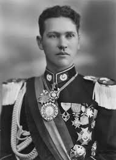

El 1ro de Mayo, Dia del Trabjo es una fecha importante que se celebra desde principios del siglo XX. Dos de los prinpipales hechos del 1ro de Mayo fueron

Presidente de Bolivia que goberno de 1937-1939, que dicta como Decreto Supremo la Ley General del Trabajo.
Despues de la Revolucion del 52, promulgo una ley que establecia el derecho a la sindicalización y a la negociación colectiva
La historia sobre el Dia del Trabajo es un tema extenso que empieza en 1886 con. . . . . . . .
VisitarLos derechos laborales son aquellos que estan dentro de la Constitucion Politica del Estado y la Ley. . . . . . .
VisitarAqui encontraras fotos relacionadas a la historia del 1ro de Mayo junto con presidentes que participaron en. . . . . . . .
VisitarAl interior de la historia del 1ro de Mayo existen personajes que sobresalieron por sus ideas, acciones que. . . . . . .
Visitar